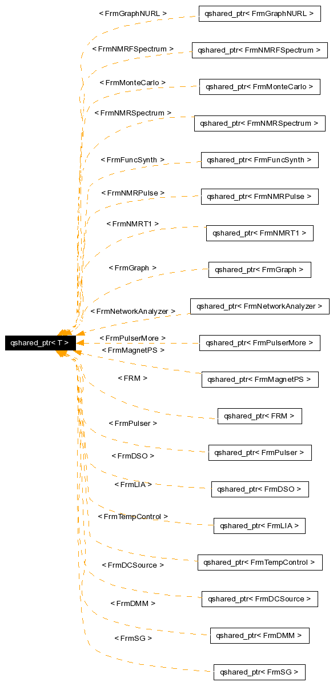

メインページ
ネームスペース
クラス
ファイル
ディレクトリ
関連ページ
アルファベット順一覧
構成
クラス階層
構成メンバ
クラス テンプレート qshared_ptr< T >
qshared_ptr< T >に対する継承グラフ

[
凡例
]
すべてのメンバ一覧
Public メソッド
qshared_ptr
()
template<class Y>
qshared_ptr
(const
qshared_ptr
< Y > &p)
template<class Y>
qshared_ptr
(Y *p)
template<class Y>
qshared_ptr
< T > &
operator=
(const
qshared_ptr
< Y > &p)
説明
template<class T>
class qshared_ptr< T >
xnodeconnector_prv.h
の
28
行で定義されています。
このクラスの説明は次のファイルから生成されました:
kame/
xnodeconnector_prv.h
KAME2に対してFri Jan 25 00:34:36 2008に生成されました。
1.4.6
 1.4.6
1.4.6